Complete Workflow Overview

Visual process flow for Omnibus Review multi-agent system
git diff --cached
Each agent operates in isolation with:
Why? Prevents groupthink, maximizes coverage, allows specialization

Phase 4 is triggered when user specifies --fix flag.
Key principle: No confirmation prompts. All fixes proceed automatically with complete solutions.

Spawn one omnibus-fixer subagent per file (in parallel):
Spawn one omnibus-validator subagent per fixed file (in parallel):
Result: Report remaining issues for manual resolution
Each subagent starts with fresh context:
| Phase | Estimated Time | Notes |
|---|---|---|
| Phase 1: Pre-Review | 15-30 seconds | Reading local files, fast |
| Phase 2: Agent Review | 2-4 minutes | Parallel, ultrathink adds time |
| Phase 3: Aggregation | 10-20 seconds | Local processing |
| Phase 4: Fix Cycle | 5-15 minutes | Varies by issue count, test time |
| Total (without fix) | 3-5 minutes | Report-only mode |
| Total (with fix) | 8-20 minutes | Includes automated fixes |